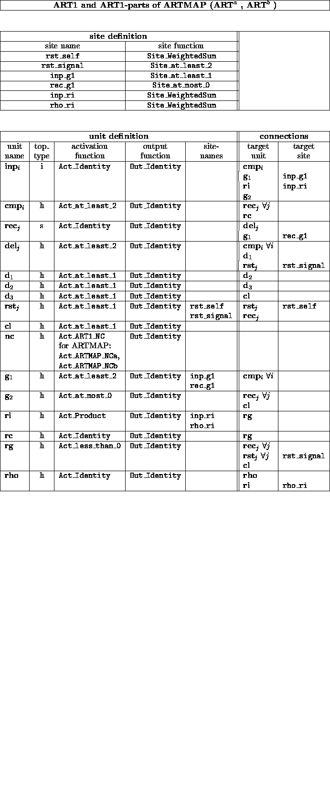
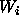
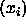
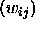
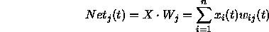
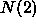
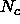
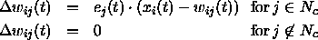

The Self-Organizing Map (SOM) algorithm of Kohonen, also called Kohonen feature map, is one of the best known artificial neural network algorithms. In contrast to most other algorithms in SNNS, it is based on unsupervised learning. SOMs are a unique class of neural networks, since they construct topology-preserving mappings of the training data where the location of a unit carries semantic information. Therefore, the main application of this algorithm is clustering of data, obtaining a two-dimensional display of the input space that is easy to visualize.
Self-Organizing Maps consist of two layers of units: A one dimensional input layer and a two dimensional competitive layer, organized as a 2D grid of units. This layer can neither be called hidden nor output layer, although the units in this layer are listed as hidden units within SNNS. Each unit in the competitive layer holds a weight (reference) vector,

, that, after training, resembles a different input pattern. The learning algorithm for the SOM accomplishes two important things:
Before starting the learning process, it is important to initialize the
competitive layer with normalized vectors. The input pattern vectors
are presented to all competitive units in parallel and the best
matching (nearest) unit is chosen as the winner. Since the vectors
are normalized, the
similarity between the normalized input vector X =  and the
reference units
and the
reference units

=
can be calculated using the dot product:
The vector

most similar to X is the one with the largest dot product with X:

The topological ordering is achieved by using a spatial neighborhood
relation between the competitive units during learning. I.e. not only
the best-matching vector, with weight , but also its neighborhood


, is adapted, in contrast to a basic competitive learning algorithm like LVQ:
where

(Gaussian Function)
The adaption height and radius are usually decreased over time to enforce the clustering process.
See [Koh88] for a more detailed description of SOMs and their theory.